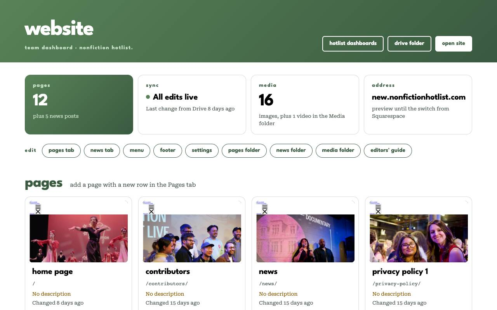
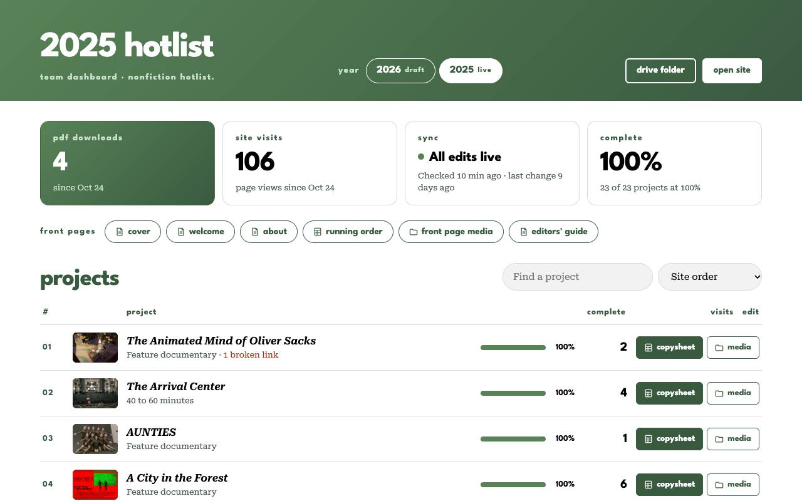
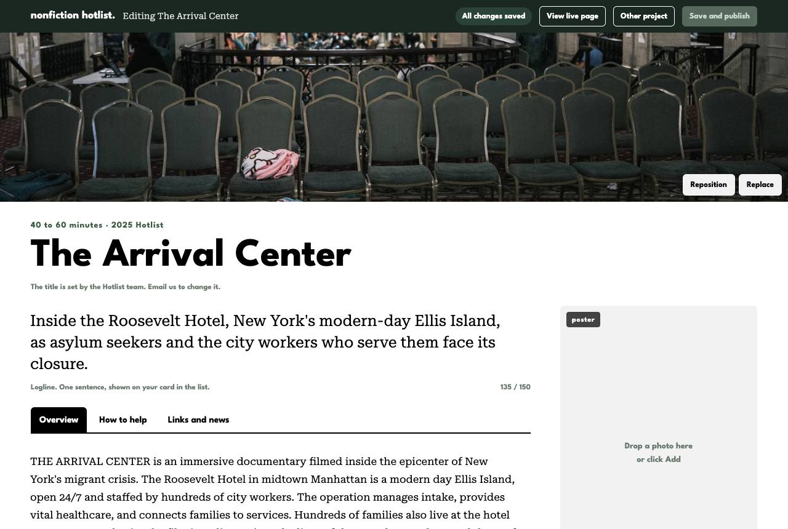
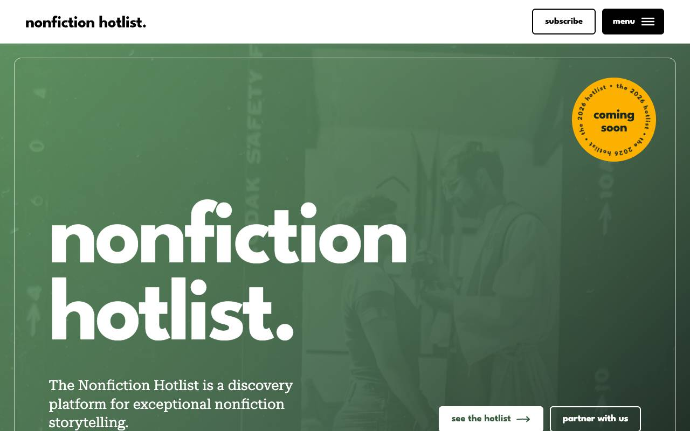
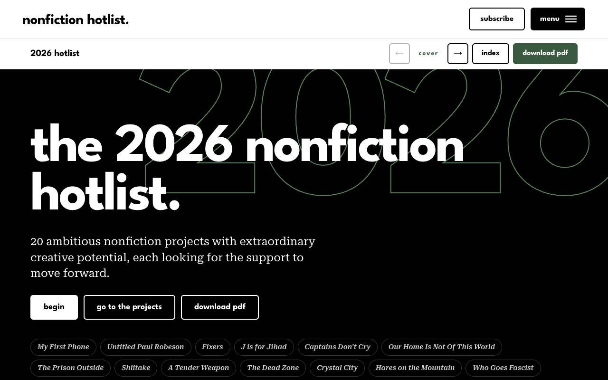

two dashboards
Start at a dashboard whenever you want to change something. Each one lists every page or project with a link straight to what you edit, and flags anything that needs attention.

- A card for every page and news post, with an edit link to its Doc
- Buttons to the Site sheet tabs and Drive folders
- Edits that were skipped, and why

- A switch for the year, 2026 or 2025
- Every project, with its edit page, password, copysheet and media folder
- Visits, PDF downloads, broken links and skipped edits
coreteam
Opens both dashboards, this guide, and every project's edit page. Type it once and your browser remembers it. Please keep it within the team.
project edit pages
Each year's projects can be edited on a web page that looks like the project page itself. It's the easiest way for filmmakers, and for us, to update text and images.

- Each project has its own password, like
harbor-lantern-42. It opens only that project. Find it on the list dashboard, in the project's row. - coreteam opens every project, with a list to pick from.
- Everything is editable except the title, which only the team changes, in the copysheet.
- Images: drag a photo onto the hero, poster, key image or a still. Then drag it to choose what stays in frame. Photos are resized before upload.
- Changes go live in about 5 to 10 minutes after Save and publish. Anything added goes straight onto the page.
sending a project its edit page
- Open the list dashboard and pick the year.
- Find the project. Copy its password from its row.
- Send the team the address and password. You can use the message below.
Nothing is deleted. Replaced or removed images move to a "Replaced" folder inside the project's Media folder in Drive. The copysheet still works too, and always shows the same text as the edit page.
the two sites

Home, about, news, contributors, submissions and Yahoo x NFH. It's a preview for now; nonfictionhotlist.com still shows the old Squarespace site until we switch over.

One list per year. 2025 is live. 2026 is a draft, hidden from search but open to anyone with the link. Each list has project pages and a PDF that rebuilds itself.
editing the website
Drive › Nonfiction Hotlist CD › NFH Website
| page text | Open the page's Doc in 01 Pages and type. Leave the grey bracket lines, like [section] and [button], as they are. |
|---|---|
| homepage | The Home Page Doc. Keep the headings and the "Label:" at the start of each line, and stay within the character limits. Storyteller quotes change only through Matthew. |
| news post | Add a row in the Site sheet's News tab. Its Doc appears in 02 News, then write the post there. |
| images | Upload to Media, then add a line in the Doc: [image: filename.jpg] |
| menu | The Site sheet's Menu tab. |
editing a hotlist
Projects: the edit page, or Drive › Nonfiction Hotlist CD › NFH 2026 (or NFH 2025)
| a project | Its edit page, or its copysheet. Both change the same text. |
|---|---|
| a title | Only in the copysheet. The project's folder and place in the list follow. |
| cover and welcome | The year's Docs, linked under front pages on the dashboard. |
| order | The running order sheet. |
| add or remove a project | The Projects tab of the running order sheet, then ask Matthew. Removed projects keep their folder in "Removed projects" and can come back. |
if something looks wrong
| not live after 20 minutes | Check edits that were skipped on the dashboard. The reason is listed next to the edit. Fix it and the next sync picks it up. New images can take up to an hour. |
|---|---|
| a password doesn't work | Copy it again from the dashboard. Passwords are lowercase, with dashes. |
| dashboard can't read the kit | A folder's sharing may have changed. Kit folders must stay "Anyone with the link: Viewer". Tell Matthew. |
| please don't | Rename, move or delete the kit folders, the "Site manifest (do not edit)" file, or the layout of the copysheets. |
| anything else | Email Matthew or info@nonfictionhotlist.com with the page address and what you expected to see. |